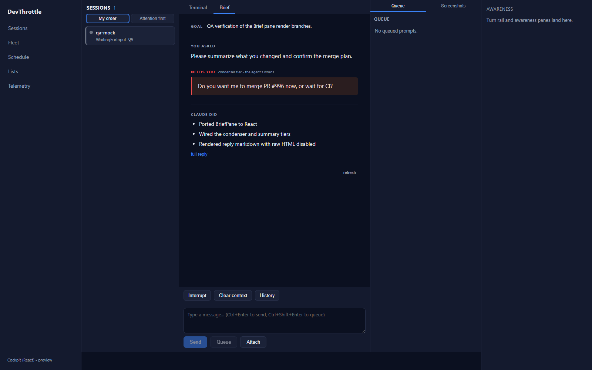
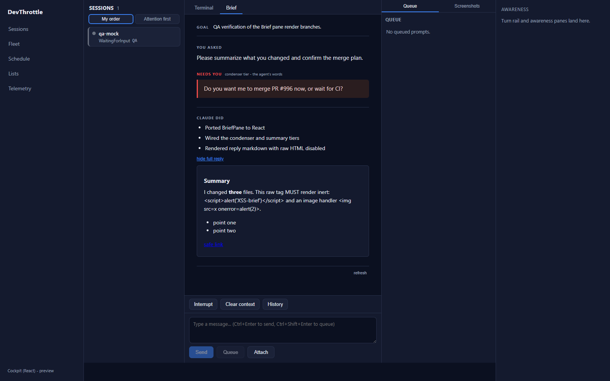
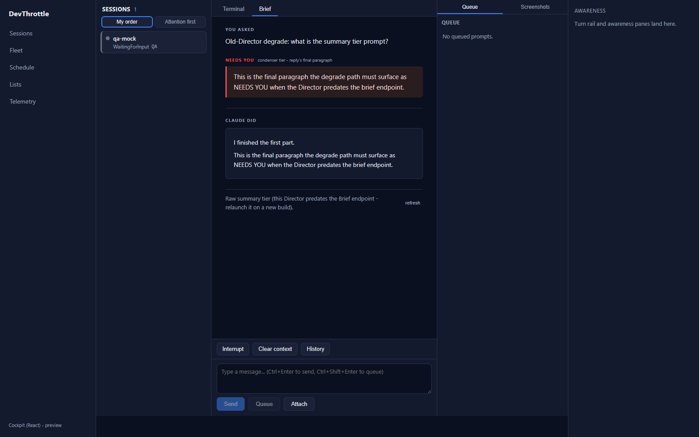
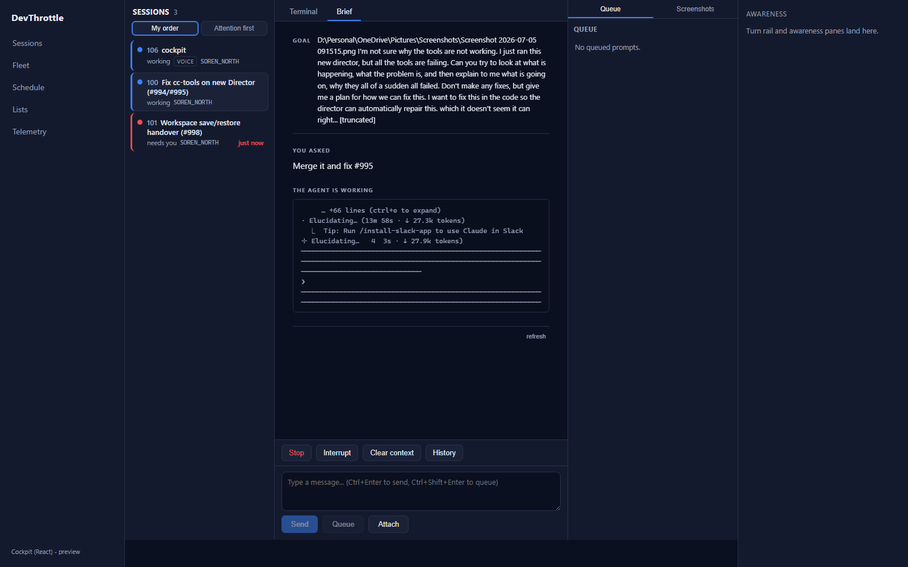
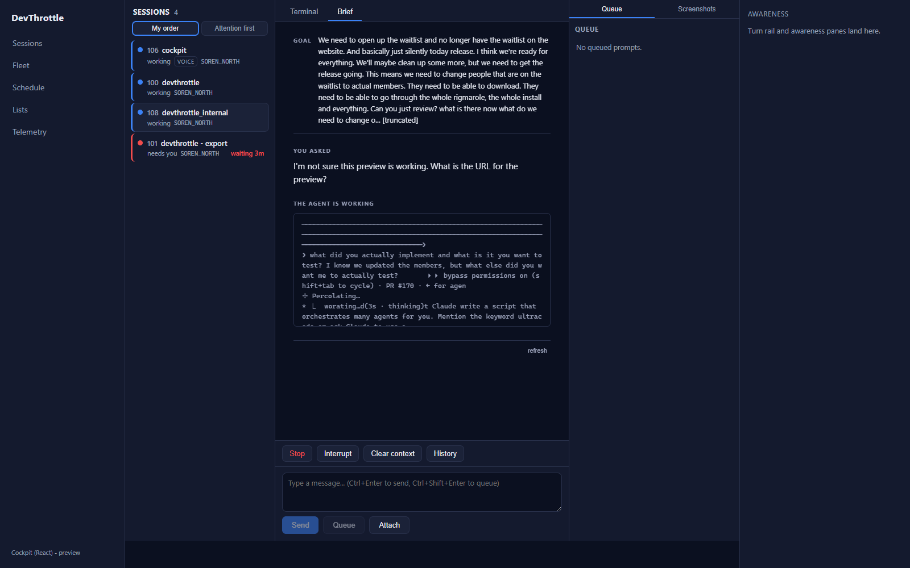

Cockpit React: port the Brief (BriefPane) — PR #996, branch issue-973-brief-pane.
Verified independently by the QA Agent (not trusting the Developer report). Part of epic #967.
D:\ReposFred\devthrottle-wt-973 on the PR branch; the shared primary tree was never touched.npm ci.vite dev server) driven with Playwright, proxied to the live Gateway on this machine (127.0.0.1:7878) with real fleet sessions that have produced real turns. Each conditional render branch was additionally exercised deterministically by feeding the real React component DTO-shaped responses via route interception.| Check | Command | Result |
|---|---|---|
| Cockpit production build (tsc --noEmit + vite build) | npm run build --workspace @devthrottle/cockpit | PASS - 55 modules, built, no type errors |
| Ingress lint rule (no absolute URLs) | npm run lint (eslint .) | PASS - exit 0 |
| client-core unit tests | npm test --workspace @devthrottle/client-core | PASS - 63/63 |
| Gateway release target (stages cockpit into wwwroot/c) | dotnet build ...CcDirector.Gateway.csproj -p:RunCockpitBuild=true | PASS - 0 Warning(s), 0 Error(s); 3 files staged |
| Full solution | dotnet build cc-director.sln | PASS - 0 Warning(s), 0 Error(s) |
| # | Criterion | Expected | Actual (verified) | Verdict |
|---|---|---|---|---|
| a | Brief renders ASK / DID / NEEDS-YOU for a real session and updates as turns progress. | The three blocks render; content tracks live turns. | Real Gateway session rendered GOAL, YOU ASKED and a live "THE AGENT IS WORKING" screen tail; a real session was observed transitioning WaitingForInput → Working live, and the roster re-populated with new sessions during the run. Deterministic render showed NEEDS YOU (red, "condenser tier - the agent's words") and CLAUDE DID bullets together. | PASS |
| b | Never blocks or freezes the live terminal while it catches up. | Terminal stays live/mounted while the Brief loads over its own fetch. | On the Brief tab, all 35 xterm DOM nodes remain mounted inside the hidden .session-pane-off pane (terminal never unmounted, WebSocket never torn down); the Brief renders alongside as independent async enrichment with its own AbortController-guarded fetch. |
PASS |
| c | Claude's reply markdown renders safely (raw HTML cannot inject markup). | Embedded raw HTML is escaped/inert; no live nodes injected. | Fed a reply containing <script> and <img onerror>. Rendered .brief-reply-md innerHTML escaped both to inert text; 0 script nodes and 0 img nodes were created. Markdown structure (h2/strong/ul) rendered; the anchor gained rel="noopener noreferrer" target="_blank". |
PASS |
| d | Degrade path behaves the same as today on an older Director. | On a /brief 404, fall to /summary + final-paragraph fallback. |
With /brief mocked 404, the pane degraded to /summary: YOU ASKED from lastUserPrompt, NEEDS YOU = final paragraph of lastAssistantText, and the "Raw summary tier (this Director predates the Brief endpoint...)" footer. |
PASS |
| e | No absolute URLs in the client (lint rule passes). | Ingress lint passes. | eslint . exit 0; all Brief reads are root-relative (/sessions/{sid}/brief|summary|buffer/html). |
PASS |
<h2>Summary</h2>
<p>I changed <strong>three</strong> files. This raw tag MUST render inert:
<script>alert('XSS-brief')</script> and an image handler
<img src=x onerror=alert(2)>.</p>
<ul><li>point one</li><li>point two</li></ul>
<p><a target="_blank" rel="noopener noreferrer" href="https://example.com">safe link</a></p>
DOM query after render: .brief-reply-md script = 0 nodes, .brief-reply-md img = 0 nodes.
NEEDS YOU + CLAUDE DID (criterion a):

Markdown reply rendered inert (criterion c):

Degrade to summary tier (criterion d):

Real live session Brief via the live Gateway (criterion a, terminal mounted behind - criterion b):


briefClient, briefFallback, historyMarkdown).QA Agent - CenCon Development Method - 2026-07-05